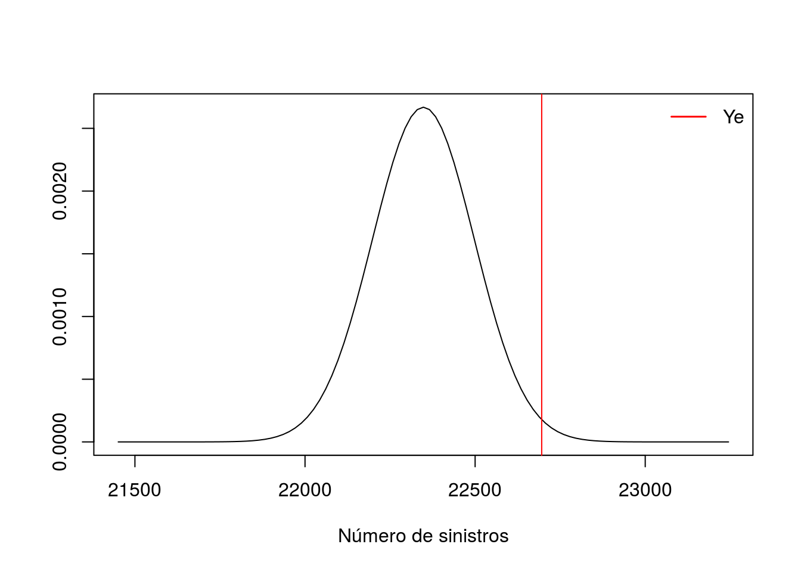
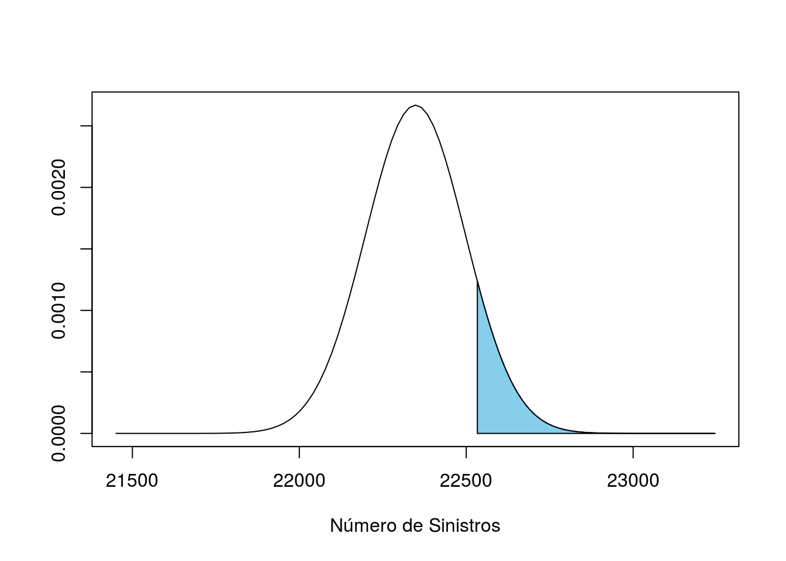
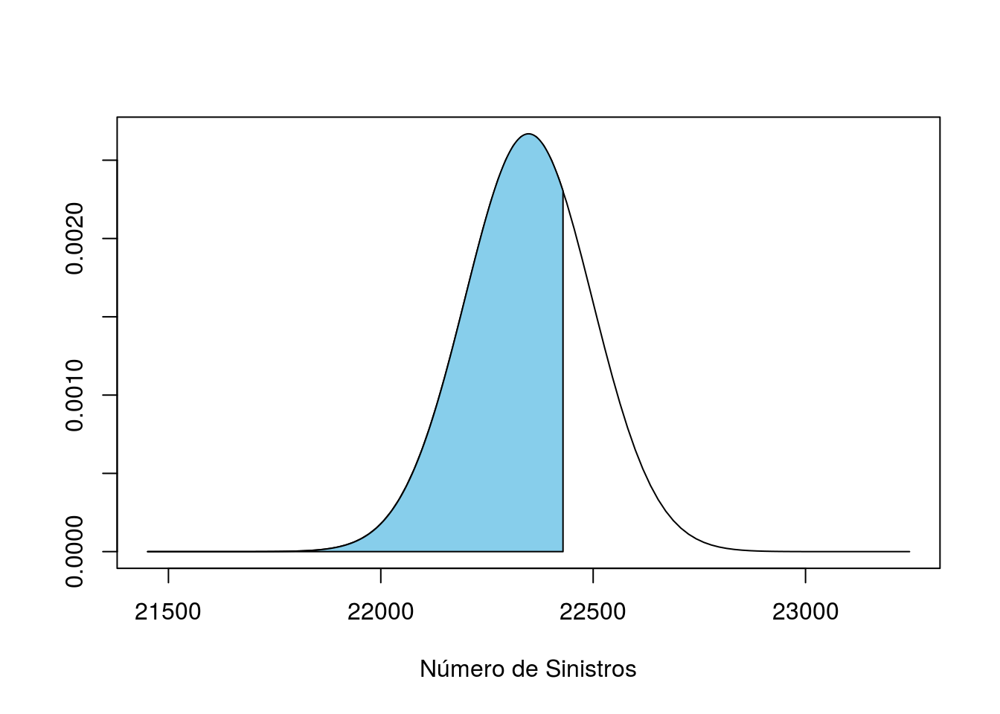

8 Trabalho 2
Um plano de saúde deseja precificar um particular tipo de exame, para uma carteira composta por 25000 pessoas. O custo de cada exame é igual a R$ 1.500,00 e cada segurado não tem limite de realização de exames no período contratado do seguro. O período de contratação é por 1 ano. Para avaliação da taxa de utilização deste exame, o estatístico fez o levantamento da utilização deste exame junto a um laboratório que atua na prestação deste tipo de serviço e que tem 12.000 clientes cadastrados. No levantamento efetuado observou-se o número de credenciados no laboratório e o número de exames realizados. Na tabela abaixo é apresentada a distribuição destes resultados.
Considerando que estas informações são uma base fidedigna para a precificação de uma carteira com 25.000 segurados, responda as questões abaixo. Para resolução das questões considere que a seguradora trabalha com uma despesa administrativa de 20%, comissão de corretagem de 15% e margem de lucro de 5%. A probabilidade de ruína adotada é de 0,01. Para solução considere a aproximação pelo Teorema Central do Limite
\[\begin{array}{cc} \text{Número de segurados} & \text{Número de exames} \\ 4900 & 0 \\ 4402 & 1 \\ 1950 & 2 \\ 590 & 3 \\ 135 & 4 \\ 23 & 5 \\ 12000 & Total \end{array}\]
INFORMAÇÕES IMPORTANTES:
\[\begin{array}{cc} N = 25000 & n = 12000 \\ c = R\$ 1.500,00 & \\ DA = 20\% & \epsilon = 0.01 \\ L = 5\% & CC = 15\% \end{array}\]
8.1 a
Determine a taxa de utilização por segurado por ano.
Para determinr a taxa de utilização por segurado vamos usar o levantamento feito pelo estatístico.
A taxa de utilização será dada pela esperança sobre o número de segurados.
n0 <- 4900
n0## [1] 4900n1 <- 4402
n1## [1] 4402n2 <- 1950
n2## [1] 1950n3 <- 590
n3## [1] 590n4 <- 135
n4## [1] 135n5 <- 23
n5## [1] 23ey <- 0 * n0 + 1 * n1 + 2 * n2 + 3 * n3 + 4 * n4 + 5 * n5
n <- 12000
taxa_utilizacao <- ey / n
taxa_utilizacao## [1] 0.89392\[\frac{E[X]}{n} = \frac{\sum_{i=0}^{5}} = \frac{ 0 \ast 4900 + 1 \ast 4402 + 2 \ast 1950 + 3 \ast 590 + 4 \ast 135 + 5 \ast 23}{12000}\]
Logo temos que a taxa de utilização é igual a 0.89392.
8.2 b
Avalie a hipótese de que o número de utilizações por segurado, por ano, segue uma distribuição Poisson (use para tanto o nível de significância igual a 0,05)
\(H_{0}\): A variável X segue uma dist \(\sim\) Pois(\(\lambda\))
\(H_{1}\): A variável X não segue uma dist \(\sim\) Pois(\(\lambda\))
\(\alpha\) = 5%
\(\hat{\lambda}\) = 0.89392
# Tabela 1 NEX = Número de exames e NSO = Número de Segurados Observados
dt <- data.frame(NEX = 0:5,NSO = c(4900,4402,1950,590,135,23))
# Probabilidade Poisson
dt$Prob_Poisson <- dpois(dt$NEX,taxa_utilizacao)
# NSE = Número de Segurados Esperados
dt$NSE <- dt$Prob_Poisson * n
knitr::kable(dt)| NEX | NSO | Prob_Poisson | NSE |
|---|---|---|---|
| 0 | 4900 | 0.40905 | 4908.606 |
| 1 | 4402 | 0.36566 | 4387.885 |
| 2 | 1950 | 0.16343 | 1961.202 |
| 3 | 590 | 0.04870 | 584.384 |
| 4 | 135 | 0.01088 | 130.598 |
| 5 | 23 | 0.00195 | 23.349 |
NEX = Número de exames
NSO = Número de Segurados Observados
NSE = Número de Segurados Esperados
t <- chisq.test(dt$NSO,dt$NSE)## Warning in chisq.test(dt$NSO, dt$NSE): Chi-squared approximation may be
## incorrectt##
## Pearson's Chi-squared test
##
## data: dt$NSO and dt$NSE
## X-squared = 30, df = 25, p-value = 0.22Com um p-value maior que 0,05, optamos por não rejeitar \(H_0\) e concluímos que os dados provavelmente seguem uma distribuição Poisson.
8.3 c
Considerando a taxa calculada em a, na carteira com 25000 segurados, qual o número esperado de segurados com nenhuma utilização em um ano? Qual o número esperado de segurados com mais de 3 utilizações em 1 ano?
Vamos calcular a probabilidade de P[X=0] e P[X>3].
p0 <- dpois(0,taxa_utilizacao)
p0## [1] 0.40905p3 <- 1 - ppois(3,taxa_utilizacao)
p3## [1] 0.01316Obtemos os seguites resultados.
Para P[X=0]
N <- 25000
rc1 <- N * p0
rc1## [1] 10226Para P[X>3] = 1 - P[X \(\leq\) 3]
rc2 <- N * p3
rc2## [1] 329.01Temos então que o número esperado na carteira de 25000 com nenhuma utilização é igual a 10226.26242 segurados e com mais de três utilizações 329.00861 segurados.
8.4 d
Qual a taxa de utilização do exame, na carteira por ano?
\[N \ast \lambda\]
mu <- N * taxa_utilizacao
mu## [1] 22348Logo, esperamos que na carteira, no período de um ano, ocorram em média 22347.91667 sinistros.
8.5 e
Qual o prêmio de risco da carteira?
Utilizando o resultado em (1.4).
Temos então:
c <- 1500
ex <- c * N * taxa_utilizacao
ex## [1] 33521875Logo o prêmio de risco da carteira é R$ 33521875.
8.6 f
Se não for adotado capital de garantia, qual o carreamento de segurança a ser praticado e qual o prêmio puro a ser considerado, com a probabilidade de ruína adotada no enunciado?
Aproximando uma Poisson para uma Normal temos que:
\[\mu = \lambda\]
\[\sigma^2 = \lambda\] \[\xi_\epsilon = 0.01\]
# Média
mu## [1] 22348# Desvio-Padrão
sigma <- sqrt(mu)
curve(dnorm(x,mean = mu,sd = sigma), from = mu - 6 * sigma, to = mu + 6 * sigma,
ylab = "" , xlab = "Número de sinistros")
# Número de sinistros respectivo a um \xi = 0.01
ye <- qnorm(0.99,mean = mu, sd = sigma)
abline(v = ye, col = "red")
legend("topright", legend = "Ye", lty = 1, lwd = 1.5, col = "red", bty = "n")
Temos então que o prêmio puro é igual a:
\[PP = cY_\epsilon - U_0\]
Como \(U_0\) = 0
pp <- c * ye
pp## [1] 34043531\[PP = 34043531.27855\]
E o carregamento de segurança é igual a:
\[PP = P(1 + \lambda)\] \[\lambda = \frac{PP - P}{P}\]
Com \(U_0\) = 0.
# lembrando que ex é igual o prêmio de risco
lcar <- (pp - ex) / ex
lcar## [1] 0.015562Temos então que:
\[\lambda = 0.01556\]
8.7 g
Neste caso, qual o prêmio comercial individual mensal, considerando um parcelamento em 12 meses, sem adotar-se juros?
\[PC = \frac{PP}{1 - [DA + L + CC]}\]
da <- 0.2
l <- 0.05
cc <- 0.15
pc <- pp / (1 - (da + l + cc))
pc## [1] 56739219\[PC_{i,m} = \frac{PC}{m \ast N}\]
m <- 12
pci <- pc / (m * N)
pci## [1] 189.13\[PC_{i,m} = \frac{56739218.79758}{12 \ast 25000} = 189.13073\]
Logo temos que o Prêmio Individual Mensal é igual a R$ 189.13073.
8.8 h
Se for praticado um prêmio comercial individual mensal igual a R$ 150,00 qual deve ser o capital de garantia a ser adotado para manutenção da probabilidade de ruína almejada?
\[PC_{i,m} = \frac{PC}{mN} = \frac{ \frac{PP}{1 - [DA + L + CC]}}{ m N} = \frac{PP}{(1 - [DA + CC + L])mN} = \frac{cY_\epsilon - U_0}{(1 - [DA + CC + L])Mn}\]
\[PC_{i,m}(1 - [DA + L + CC])nM - cY_\epsilon = - U_0\]
\[U_0 = cY_\epsilon - PC_{i,m}(1 - [DA + L + CC])nM\]
# preço comercial individual da questão h
pci_h <- 150
U <- c * ye - pci_h * (1 - (da + l + cc)) * m * N
U## [1] 7043531Logo o capital de garantia que deve ser adotado para se manter as mesmas condições tem que ser igual a R$ 7043531.27855.
8.9 i
Ao se praticar um prêmio comercial individual mensal de R$ 160,00 e um capital de garantia de R$ 5000000. Qual será a probabilidade de ruína que a seguradora estará incorrendo?
Utilizando o desenvolvimento de \(PC_{i,m}\) da questão anterior, só que ao invez de isolarmos \(U_0\) vamos isolar \(Y_\epsilon\).
\[PC_{i,m}(1 - [DA + L + CC])nM = cY_\epsilon - U_0\]
\[Y_\epsilon = \frac{PC_{i,m}(1 - [DA + L + CC])nM + U_0}{c}\]
pci_i <- 160
U_i <- 5000000
ye_i <- (pci_i * (1 - (da + l + cc)) * m * N + U_i) / c
ye_i## [1] 22533Encontrando a probabilidade de ruína para \(Y_\epsilon\) = 22533.33333.
to <- mu + 6 * sigma
curve(dnorm(x,mean = mu,sd = sigma ),from = mu - 6 * sigma ,to = to ,xlab = "Número de Sinistros", ylab = "")
cord.x <- c(ye_i,seq(ye_i,to,0.01),to)
cord.y <- c(0,dnorm(seq(ye_i,to,0.01),mu,sigma),0)
polygon(cord.x,cord.y,col = 'skyblue')
ee <- round(1 - pnorm(ye_i, mu , sigma),2)
ee## [1] 0.11Logo a probabilidade de ruína fica igual a 0.11.
8.10 j
Adotando-se o capital de garantia de R$ 400000 e a probabilidade de ruína de 0.01, qual deve ser o prêmio comercial individual a ser cobrado do segurado?
Calculando o novo prêmio puro.
u_j <- 400000
pp_j <- c * ye - u_j
# Novo prêmio puro
pp_j## [1] 33643531pc_j <- pp_j / (1 - (da + l + cc))
# Novo prêmio comercial
pc_j## [1] 56072552pci_j <- pc_j / (m * N)
# Prêmio comercial individual
pci_j## [1] 186.91Logo o novo prêmio comercial individual mensal é de R$ 186.90851.
8.11 k
Com o prêmio comercial definido em j qual fica sendo a probabilidade de lucro com a subscrição?
Vamos verificar quanto o montante agregado pode pagar.
\[\xi = \frac{PP}{c}\]
xi <- pp_j / c
xi## [1] 22429Agora vamos ver qual a probabilidade de P(Y < 22429.02085).
to <- mu + 6 * sigma
from <- mu - 6 * sigma
curve(dnorm(x,mean = mu,sd = sigma ),from = from ,to = to ,xlab = "Número de Sinistros", ylab = "")
cord.x <- c(from,seq(from,xi,0.01),xi)
cord.y <- c(0,dnorm(seq(from,xi,0.01),mu,sigma),0)
polygon(cord.x,cord.y,col = 'skyblue')
l_k <- round(pnorm(xi, mu , sigma),2)
l_k## [1] 0.71Logo a probabilidade de lucro é igual a 0.71.
8.12 l
Com a especificação do prêmio comercial definido em j qual a distribuição do prêmio comercial para despesas administrativas, comissão de corretagem, margem de lucro e pagamento de sinistros.
x <- pci_j * N * m
DA <- paste0("R$ ", x * 0.2)
CC <- paste0("R$ ", x * 0.15)
L <- paste0("R$ ", x * 0.05)
PP <- paste0("R$ ", pp_j)
df <- data.frame(PCim = c("Despesas Administrativas",
"Comissão de Corretagem",
"Margem de Lucro",
"Pagamento de Sinistros"),
VL = c(DA,
CC,
L,
PP))
knitr::kable(df)| PCim | VL |
|---|---|
| Despesas Administrativas | R$ 11214510.426182 |
| Comissão de Corretagem | R$ 8410882.81963651 |
| Margem de Lucro | R$ 2803627.6065455 |
| Pagamento de Sinistros | R$ 33643531.278546 |